const fs = require('fs');
const path = require('path');

fs.writeFileSync(
  path.join(__dirname, 'renderer', 'start.html'),
  `<!DOCTYPE html>
<html lang="en">
<head>
  <meta charset="UTF-8">
  <meta name="viewport" content="width=device-width, initial-scale=1.0">
  <title>Tic-Tac-Toe Start</title>
  <link rel="stylesheet" href="css/style.css">
</head>
<body>
  <div class="window-controls">
    
    
  </div>
  <div class="start-screen">
    
    
  </div>
  <script>
    const { ipcRenderer } = require('electron');

    document.getElementById('minimize').onclick = () => ipcRenderer.send('minimize');
    document.getElementById('close').onclick = () => ipcRenderer.send('close');
    document.getElementById('start-btn').onclick = () => ipcRenderer.send('navigate', 'mode');
  </script>
</body>
</html>`
);
